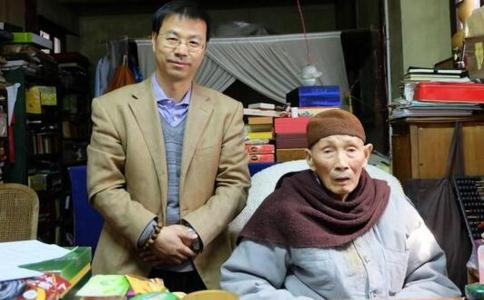

2016年12月2日，农历十一月初四，
明学长老，法名传慧，号德本，生于1923年农历二月初八，祖籍浙江湖州，俗名冯祖慎。回望长老一生，缅怀其伟绩丰功，均与灵岩山有着无法隔绝的甚深因缘。
一、灵岩道风 长老生长于一个
1979年底，明学长老回到灵岩山主持恢复工作。1980年冬，任灵岩山寺住持，奉献于
灵岩山寺历史悠久，春秋时曾是吴王夫差为西施所建馆娃宫故址。东晋时，司空陆玩曾居于灵岩山，因得闻
灵岩山寺成为净土道场，已是民初。因咸丰十年（1860），太平天国兵火，致寺内建筑大半焚毁。1873年念诚法师略加修复。宣统三年（1911），真达法师住持本寺，与妙真法师协力复兴堂舍，殿宇渐全，民国十五年（1926）请印光法师把灵岩山寺开辟为十方净土道场，印光法师曾为山门撰书对联来宣扬本寺宗风：
弥陀誓愿全收九界，示众生心作心是之洪猷。
印光大师（1861-1940）乃近代四大高僧之一，一生专修净土宗，写有大量弘扬净土宗的文章，蒙其接引者无数，被尊为净土宗第十三祖。印光法师驻锡灵岩山寺时，要求僧人坚持“不募缘，不做会，不传法，不收徒，不讲经，不传戒，不应酬经忏。专一
1.住持不论是何宗派，但以深信净土，戒行精严为准，只传贤，不传位，以杜法眷私属之弊。
2.住持论次数，不论代数，以免高德居庸德之后之嫌。
3.不传戒，不讲经，以免招摇扰乱
4.专一念佛，除打佛七外，概不应酬一切佛事。
5.无论何人不得在寺收剃徒弟。
以上五条，如有违者立即出院。有此规约，净土宗风大盛，灵岩山寺成为国内最著名的净土道场，由此成就了“灵岩道风”的美誉。
明学长老自住持灵岩山寺以来，恪守印祖遗训，将五条规约作为灵岩山寺共住规约的核心，不做经忏、不收徒、不传戒、不办讲经法会，坚持十方丛林制度。2015年4月8日，明学长老在接受《中国
在全寺僧众会上，长老也常提到：“祖师定下来的规约，在我明学手里一点也不能改，否则我对不起祖师大德，也对不起前来参学的同修。”长期以来，灵岩山寺的道风，严格承继了印祖的遗风。长老明确表示，净土道场，依印光大师的祖训：专一念佛。可以说笃修一行，圆成万德。这就是灵岩家风。
二、戒律持守 持戒与念佛的统一，一直是净土祖师倡导的宗风。慧远大师临终坚持不饮非时浆。善导大师护持戒品，纤毫不犯。心绝念于名闻利禄，从不举目而视女人。宋
印光大师圆寂前曾嘱咐真达和尚：“汝要维持道场，宏扬净土，不要学大派头。”明学长老住持山寺以来，秉承灵岩道风，发扬优良传统，对戒律视为生命。灵岩山寺在唐宋年间原本就是律宗道场，戒月常明，律风清凉。而明学长老早年
1979年回山主持恢复工作，重穿僧衣，肯切地向赵朴老提出：“您让我换僧服，我穿上就不会再脱下来！”令人想到当年
戒为无上菩提本，长老几十年如一日遵行戒律，恪守清规，发扬“
长老是这样说的，更是这样来做的。长老德高望重，常有信众施与供养，他却分文不动，全部上缴库房，利和同均。长老后来年事渐高，许多人劝他到小斋堂吃饭，不必随众，他却在大斋堂与寺众一同过堂。每次饭碗用后，加些热水，摇匀喝下，然后取毛巾擦干，下餐继续用。这是当年印祖的作风。每天仅用一瓶开水，洗脸热水用后保留到晚上，加些热水再用。洗脚水也不随便倒掉，或浇花木，或冲盂器，从不浪费。这是弘一法师当年提倡的“惜福”。
长老说：“出家人不能贪图享受，否则就会妨碍
《菩萨璎珞本业经》说：“若一切众生，初入三宝海，以信为本，住在佛家，以戒为本。”法门八万，持律居先；戒行三千，威仪最上。长老数十年如一日，领众熏修，以身作则，言传身教，使灵岩山寺道风丕振。良好的道风保证了寺院
常言道：“人能弘道，非道弘人”。1978年以来，随着宗教政策的不断落实，寺院场所的回归恢复，佛教后继无人，僧才培养成为最为紧要的事情。长老以宏愿硕德，精心策划，发心创办
长老作为早年中国佛学院毕业的前辈，对于佛学院的教育宗旨，有着深切的感受，他说：“一个出家人，若没有坚定的信仰，那么他学的知识越多，对于佛教越不利。”指出佛学院教育的特殊性，重在坚固信仰，道念增上，僧格养成。所以特别强调佛学院录取的学僧，首要条件是要有坚定的信仰，坚定的道心，严守戒律。在此基础上，经过佛学院的学习深造将来才可能成为弘扬佛法、续佛慧命的栋梁之才！
长老认为要办好僧伽教育，有四个条件：一、僧源；二、师资；三、经济；四、管理。在这四点之中要严抓管理，没有好的管理，再好的僧源、师资，再多的资金都是浪费。同时还要注重学风和道风的培养，把僧伽教育制度化。对于好的制度一定要坚持遵守，不可以立而不行，要将它变成一个传统；不好的制度则要及时修改。多年来，学院坚持将“学修一体化，学僧生活丛林化”作为办学宗旨，要求每个学僧解行并重，勤修三业，务必做到
在教学设计上，学院坚持“学宗
长老还高瞻远瞩地提出，佛法的弘扬还是要以宗派为依据，中国佛教的教育也要有所侧重和以宗派为依据。“中国佛教有八大宗派，比如灵岩山寺专修净土，是净土道场，我们就要把净土宗修持好，好好弘扬净土宗，一门深入，依《净土五经》行持。南京栖霞山，是三论宗的祖庭，就要把三论宗弘扬下去，不要让它湮没掉了。
佛学院开办三十多年来，龙象辈出，僧才济济，薪火相传，灯灯续焰，将佛法光明传至五湖四海。至今仍有60余位学僧在学院深造学修。在长老看来，中国佛教界最需要做的事情是培养后继僧才。没有僧才，没有僧团，再恢弘的寺院也只不过是一处旅游景点，无法起到
在兴办僧才教育的同时，长老也继承印祖遗志，在报国寺支持恢复弘化社。弘化社是现代著名的
印光大师曾言：“灵岩，乃天造地设之圣道场地。得最胜之地，方可宏最胜之道。建非常之事，必须待非常之人。虽否极泰来，属于天运。而革故鼎新，实赖人为。”也许可以将此看作印祖的预言，明学长老就是这样一位“非常之人”，他的一生与这座承载着太多记忆的山寺已无法分开，1947年入山，2016年辞世，70年的因缘，形成甚深的“不二”。灵岩山寺1980年元旦就恢复开放，可以说是在全国寺庙中落实政策最早的。所以它的呈现就有里程碑式的意义，彰显着新时代中国佛教的形象表达，体现着党和政府宗教政策的落实。长老感知肩头重担，了知此中深义，荷担如来家业，勤勉精进，一举一动，牵涉全局，临深履薄，筚路褴褛，不负众望，最终让灵岩山寺成为改革开放以来全国三大样板丛林之一，受到海内外信众的赞叹，吸引了无数善信前来参学，其摄受力令教界瞩目。
因经常参加佛教界活动，有许多的因缘与长老的见面，但大多是远远凝望着。最为亲近的两次，一是2015年10月18日，在浙江湖州市长兴县碧岩禅寺参加“
最让我难忘的是，2015年我申报的“统筹推荐世界一流大学和一流学科建设”项目“净土文化工作坊”经学校研究批复，经弘化社宋浩先生沟通，长老慈悲题写坊名，8月1日收到了长老的墨宝，令我感激无尽，至今温暖在心。
金炉香冷，法海舟沉。2日晚22:45时收到一朋友微信，告知长老于22时安详示寂。3日上午十时我赶到苏州，与宋浩兄一同上山祭拜，长老法体安供于香光厅，庄严肃穆，四众助念，佛号声声，在寺院上空回旋……
在寺里遇到纪录片《灵岩道风》的导演仁正居士，也是一大早专程从北京赶来祭拜的，为我讲述了二年拍摄期间长老的悲智种种……
下山赴高铁站途中，当出租车司机得知我是去祭拜长老时，说自己虽然不是居士，但母亲是灵岩山的皈依弟子。他听母亲说，长老非常慈悲，凡是来山上求皈依的
记得长老在一次采访中说：作为出家人，如来家业的荷担者，不管如何适应社会，发展经济，我们都不能忘记自己的根本。发展经济是为弘扬佛法，而非弘扬佛法是为发展经济。寺院需要现代化，发展寺院经济，以适应社会潮流，使佛法能随顺应化。但更要强化僧人修持，庄严道场形象，而不能过于随顺而流于世俗化。灵岩山寺作为净土道场，不管佛学院、
长老一生爱国爱教，持戒念佛，信仰坚定。1983年当选为苏州市人大代表，1988年被推举为江苏省佛教协会副会长，1994年被推举为中国佛教协会咨议委员会副主席，1998年被推举为江苏省政协委员，1998年当选为苏州市佛教协会会长，2003当选中国佛教协会副会长，江苏省佛教协会会长。2015年4月19日中国佛教协会第九次全国代表会议在北京开幕，明学长老当选中国佛教协会新一届咨议委员会主席。
长老临终亦未退居，尽形寿不享清福，践行了自己出家时“将此身心奉尘刹，是则名为报佛恩”的誓言，一生为寺院精打细算，尽心尽力，“分钱要省，百钱要用”，他舍不得祖庭，放不下寺众。